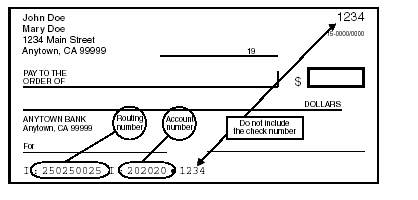

Standard E-File Pages
- There are a number of standard pages in the E-file section, with a progress bar across the top. (One page, Bank Account, is visible only if needed.)
- Clicking “Continue†at the bottom of a page saves the information entered in that page.
- Clicking a circle or heading in the progress line at the top of the page(s) takes you to that page.
- At any time, you can return to the main part of the return by clicking something in the left navigation bar, but if you do, anything entered since the last “Continue†was clicked won’t be saved.
Return Details page
Select how the federal and state returns will be filed (E-file or paper) and how the refund or payment will be handled (paper check, direct deposit, direct debit).
- “E-File: Mail Payment†includes any payment option other than direct debit from a bank account that is specified in the return. (Taxpayer options for paying an amount due are discussed in the Balance Due section, page 117.)
- [Workaround] If the taxpayer is neither getting a refund from nor owes money to the IRS, select “E-File: Mail Payment†if the return is to be filed electronically; otherwise select “Paper Return”.
- Note for CA returns: If the taxpayer has a balance due and will pay via a direct debit from a bank account, the printed return should automatically include CA Form 8455, California e-file Payment Record for Individuals. When printed, check this form to make sure it has a dollar amount on it; if not, enter that manually.
- Checking the “Only transmit the state return(s)†box results in e-filing only the state return - the federal return won’t be transmitted to the IRS.
- This is typically used when the federal return has been accepted but the state return rejected. After making corrections, the state return can be electronically filed by checking this box and using the “Save and Transmit Return†button on the Submission Page, if having ERO capabilities.
- Note: This also can be used when the federal return has been rejected because of identity theft – often whoever committed the theft did not file a state return, or (possibly) filed the state return in another state. (E-filing the state return means that the taxpayer doesn’t have to paper file that return, and speeds up any refund.)
- Warning: if you are not the LC or ERO, don’t check this box without prior approval.
- There’s no reason to change the default PINs for Form 8879s.
- Optional questions (click if you want this to be visible):
- Third party designee information: This is only used when the taxpayer is designating someone who can speak to the IRS on their behalf.
- This is a very limited authorization, not a power of attorney, and the taxpayer must still sign the return or Form 8879 themselves.
- You or any other counselor or volunteer may never be a third-party designee.
- If an elderly taxpayer is accompanied by their adult child and the taxpayer seems to depend on the child for understanding interview questions, or if there are other issues, then the taxpayer might be asked if they would like to designate someone for this limited purpose.
- If they agree, they must provide a name, phone number, and PIN, which authorizes the named third party (say, their adult child) to discuss the return with the IRS.
- Third Party Designee information appears on Form 1040 (except amended returns) just above the signature line. An authorization expires one year from the due date of the tax return.
Fee Summary Page
- This page is not relevant to Tax-Aide – either skip it, or click “Continue†to go to the next page.
Bank Account Page
- Note: This page won’t show in the progress bar at the top of the E-file section, and won’t be accessible unless the Return Details page specifies a direct deposit or direct debit for the federal and/or state returns.
- On this page, the bank account information is normally taken from a check that the taxpayer has with them.
- Encourage taxpayers who don’t use checks to ask their bank for a letter of account verification. The same information, from a website or mobile app on the taxpayer’s mobile phone, is also acceptable.
- The taxpayer doesn’t have to void the check or even remove it from their checkbook.
- It is not acceptable to have the taxpayer provide direct deposit information by calling a site or a counselor, because if an error is later discovered, it’s impossible to prove who was at fault.
- If the taxpayer wants to use the account information from the prior year’s return, then it’s acceptable to put the non-verified account information on the return, if the preparer does the following:
- Advises the taxpayer that the account information on the return is at their own risk, and if the funds do not arrive in their account, there is no way to trace or replace the funds.
- Has the taxpayer initial next to the account information on the printed return.
- Specifics:
- Entering a bank name isn’t required.
- Multiple bank accounts can be entered in TaxSlayer; they show on Form 8888, Allocation of Refund.
- The state refund or payment (if done electronically) uses the first account listed. (In TaxSlayer, a state refund or payment can never be split between multiple accounts.)
- Use the “Pull Refund†button if the entire refund amount is to go into the first account that is entered (which for most returns is the only account entered).
- For each bank account, enter the 9-digit Routing/Transit number (which is always on the left side of the MICR encoded line on checks) and the account number.
- Never use a deposit slip – the routing number for deposit slips is often different from the routing number for checks.
- Omit spaces, dashes, and special symbols.
- DO NOT enter the check (sequence) number, which matches the check number on the upper right corner of the check
- The check number may appear before the account number, though it normally follows the account number.

- New: As of Jan. 1 2025, paper savings bonds are no longer issued, and savings bonds in any form can no longer be purchased with a tax refund.
- All bonds are accessed by the taxpayer through a https://www.treasurydirect.gov account associated with the primary SSN on the return.
- Taxpayers can check the status of their prior bonds via Treasury Retail Securities, 1-800-245-2804.
- If there is a “Direct Debit Information†area, the “Requested Payment Date†field must be the IRS tax deadline or earlier. The phone number – required – is that of the taxpayer; it autofills from the phone number entered in the Basic Information section.
- Warning: TaxSlayer includes direct debit information for the federal return in a form – the Client Form Listing Summary – that is usually not printed and therefore not given to the taxpayer. To provide documentation for the direct debit, generate the Quality Review PDF and print only the page (usually page 3) which includes the direct debit information.
State ID License Page
- CA process note: Do not enter or select anything on this page; it isn’t required.
Taxpayer Consent Page
- There are three consent forms in the Intake Booklet, responses to which must be entered in TaxSlayer.
- If the taxpayer doesn’t consent, then s/he should NOT SIGN that particular consent form.
- After the tax preparer has confirmed that the taxpayer does not consent (as opposed to the taxpayer not understanding the consent form), the tax preparer should write “NO†or “DECLINE†on the consent form. This makes it clear to the quality reviewer that the taxpayer has not consented.
- For MFJ returns, both taxpayer and spouse must agree (sign) a given consent form for it to take effect.
- This means that if only one of the two is present during the preparation of the tax return, you or another counselor must see the signed consent form and enter that information in TaxSlayer, when the taxpayer or spouse returns with the Intake Booklet.
- Page 5 (not numbered) of the Intake Booklet is “How to Use this Intake Booklet”. It provides good summaries of the three consent forms. If the taxpayer has questions about a consent form, this page may provide them with answers.
- The three consent forms are:
- Consent to Disclose Tax Return Information to VITA/TCE Tax Preparation Sites [Consent 1]
- If consent is given, Carryforward information from the current tax return will be available to any Tax-Aide or other TCE site, as well as any VITA site, when starting next year’s tax return. The full, filed tax return will remain accessible only at the site where it was prepared.
- If consent is not given, Carryforward information will be available only at the site where that tax return was prepared.
- Consent to Disclose/Use Information to AARP Foundation [Consent 2]
- This consent allows a very limited number of AARP Foundation staff to create statistical reports from taxpayer information stored on TaxSlayer servers. The focus of the statistical reports is the diversity information on two pages of the Intake Booklet.
- Consent for AARP Foundation to use select tax return information to provide you with additional information about other free AARP Foundation programs or services [Consent 3]
- Note: the taxpayer won’t be contacted about anything other than free AARP services if they consent.
- If, for each of the three consent forms, the taxpayer has either signed (to consent) or the consent form is clearly marked as “No†or “Decline”, then you should enter this information in TaxSlayer without further discussion with the taxpayer.
- PINs and dates
- If the taxpayer declines a request for a consent, then you don’t need to enter a PIN or a consent date in TaxSlayer.
- PINs are arbitrary; entering the same digit five times is the fastest way to enter one. Don’t ask the taxpayer for a PIN.
- The fastest way to enter the date is to use the calendar. (The current date is highlighted.)
- For MFJ returns, a consent/authorization requires two PINs (they can be the same) and two dates.
Custom Questions Page
- This page has four types of questions:
- The first nine questions are specified by the IRS, a sponsor of the Tax-Aide program. The answers to the first eight questions are in the Intake Booklet.
- The taxpayer has the absolute right to refuse to provide answers to these questions.
- If the return is MFJ, answer “Yes†to question 9 even if only one spouse was present (“Was the taxpayer physically present during the entire return preparation and quality review process?”).
- Otherwise, IRS questions do not require tax preparers to make a choice for each question; if the taxpayer doesn’t provide answers, you may skip those questions.
- Questions starting with TA01 are specified by AARP Foundation; these pull information from 2 later pages of the Intake Booklet. (The IRS is not legally able to share the responses to these questions, so the AARP Foundation must ask them separately.)
- For returns other than MFJ, spousal questions should be answered “No spouse†if that is an option; if it is not, no answer may be required.
- The taxpayer also has the right to refuse to provide answers to these questions.
- Questions TA10 and TA11 are also specified by AARP Foundation, but should be answered by the preparer, not by asking the taxpayer – the information is on the Bank Account page.
- Custom questions, set up at the district or site level.
- For example, a district might ask the identity of the quality reviewer for the return, with the answer selected from the initials (or first name and last initial) of the site’s counselors.
Submission Page
- The final step in the E-file section is the Submission Page.
- Note: If you see a message at the top of the page like “You can’t e-file”, that means you, the counselor, haven’t been given permission to transmit returns to the IRS. The return itself can be e-filed by your ERO.
- Electronic signatures: Tax-Aide does not use these.
- Printing: If you’re the preparer, you normally wouldn’t print the return until it’s been quality reviewed.
- Sharing tax documents: The Customer Portal is for taxpayers who have uploaded their tax documents, and the return is being prepared virtually; no physical Tax-Aide site is involved.
- Return status tags: Select whatever return tag(s) are appropriate.
- Keep in mind that TaxSlayer treats the return tags as text, not as something that causes any action. For example, if you select the “Ready to E-file†(or similar) tag, this does not put the return into the transmittal queue. Similarly, a tag like “Signature required†won’t prevent a return from being e-filed.
- Tags are simply a way of communicating – to other counselors – what is going on with a return. They help LCs and EROs to sort and find specific returns on the Client Search page.
- Marking a return “Complete†is the only way to put a return into the transmittal queue. Thus the “Ready to E-file†tag(s) are a waste of time and add no further information to the LC or ERO.
- More than one return tag can be selected, though normally only one is.
- “Signature Needed†(or similar) should be selected if this is a MFJ return with only one taxpayer present.
- The final actions of a preparer within TaxSlayer, prior to quality review:
- Click “Mark tax return ready for review†to change the status of the return on the Client Search (Office Client List) page to “Review Pending.†This puts the return in the “Return Reviews†section (accessible to all counselors whose security template includes review functionality).
- Click “Save and Exit Return.”
Created with the Personal Edition of HelpNDoc: Transform Your Documentation Workflow with HelpNDoc's Intuitive UI